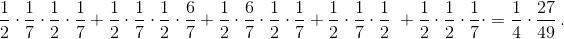

We will assume that the birth of a girl and a boy is equally probable. It is known that in some family there are two children.
a) What is the probability that one of them is a boy and one a girl?
b) Additionally, it is known that one of the children is a boy. What is the probability that there is one boy and one girl in the family now?
c) Additionally, it is known that the boy was born on a Monday. What is the probability that there is one boy and one girl in the family now?
a) The children appear in some sequence $($BB, BG, GB or GG$)$. All of the sequences are equally possible, and the probability of each is ¼. The condition "boy and girl" is favoured by two outcomes of GB and BG, hence, the probability of this is 2/4 = ½.
b) Of the four sequences, three equally possible ones remain: BB, BG, and GB. Therefore, now the probability of the event "boy and girl" is equal to 2/3.
c) We now introduce the addition of the days of the week: $B_M$ is a boy born on a Monday, $B_O$ is a boy born on any other day of the week. By condition, five sequences are possible: $B_MB_M, B_MB_O, B_OB_M, B_MG, GB_M$. Given that the probability of being born on a Monday is 1/7, and on any other day is 6/7, we find that the total probability of possible sequences is 
Of these sequences, only two: $B_MG$ and $GB_M$ favour the event "boy and girl". Their total probability is $1/4 \times 2/7$. Consequently, the conditional probability of the "boy and girl" event under the condition "there is a boy born on a Monday" is $2/7 \div 27/49 = 14/27$.
a) 1/2; b) 2/3; c) 14/27.